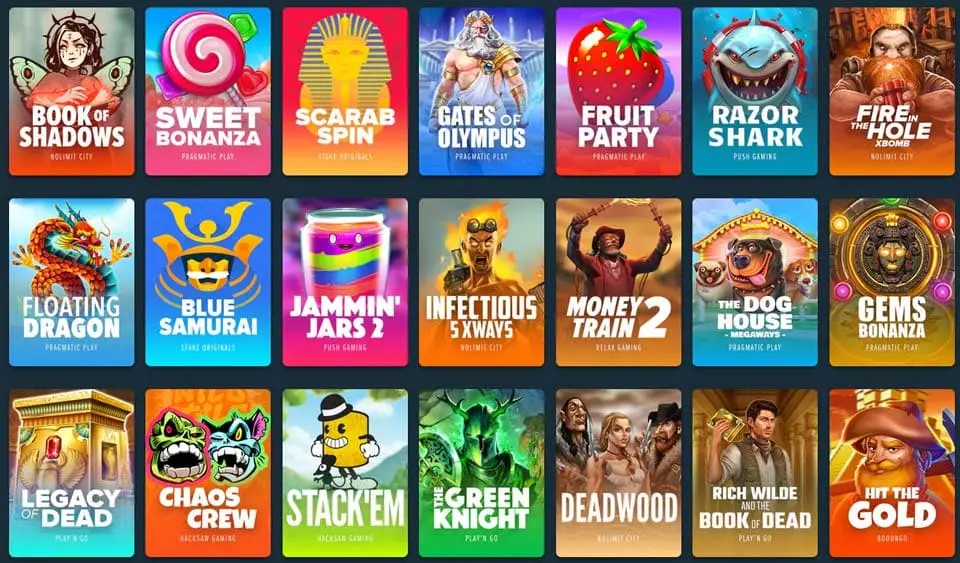

Welche sind die besten Spielautomaten auf Stake.com?

Die besten Stake Spielautomaten auf Stake.com sind diejenigen mit einem höheren Rückzahlungsprozentsatz. Das bedeutet, dass sie eine höhere Gewinnchance haben. Es bedeutet auch, dass sie mit einem höheren Hausvorteil verbunden sind. Aus diesem Grund haben wir eine Liste der beliebtesten Spielautomaten hier auf unserer Seite zusammengestellt. Außerdem haben wir Ihnen einige Informationen über diese Spiele gegeben. Jetzt können Sie entscheiden, welches Spiel das richtige für Sie ist!
Spielautomaten spielen auf stake.com
Stake ist die Nummer 1 für neue Spieler, die einen Ersteinzahlungsbonus und eine große Auswahl an anderen Bonusangeboten erhalten möchten. Sie haben einen der besten Willkommensbonusse im Internet, ohne Einschränkungen. High Roller können bis zu 1 Million Dollar an Jackpots gewinnen und es gibt noch viele andere tolle Aktionen. Stake Casino wird Boni von jedem der 10 besten Casinos anbieten. Sie können alle Ihre Lieblings-Casino-Aktionen genießen. Sie brauchen sich keine Sorgen zu machen, dass Sie sie auf einer anderen Casinoseite verlieren. Stake hat auch ein ausgezeichnetes VIP-Programm, das Spieler belohnt, je nachdem, wie viel sie bei Stake spielen!
Um den Bonus zu erhalten, müssen Sie eine Einzahlung tätigen und den Bonuscode STAKECOVER eingeben, wenn Sie dazu aufgefordert werden. Damit wird Ihr Willkommensbonus-Paket aktiviert und Sie können mit bis zu 1 Million Dollar an Gratisgeld spielen!
Stake Casino ist ein hochwertiges Casino, daher haben die Spielautomaten, die Sie hier finden, eine gute Chance auf eine Auszahlung. Je mehr von ihnen Sie spielen, desto besser sind Ihre Chancen, etwas Geld zu gewinnen. Diese Spielautomaten kommen aus einem sehr hochwertigen Casino, was ihnen eine bessere Gewinnchance gibt.
Wenn Sie auf der Suche nach einem Online-Casino mit einer großen Auswahl an Spielautomaten sind, könnte Stake.com die beste Wahl für Sie sein. Sie können aus über 400 verschiedenen Spielen wählen, wenn Sie auf dieser Website spielen. Darunter befinden sich Klassiker wie Blackjack und Roulette. Es gibt auch Favoriten wie Baccarat und Craps. Diese Auswahl macht es einfach, etwas Befriedigendes in den Spielsitzungen zu finden. Die Spieler müssen sich nicht allzu oft außerhalb des Angebots dieser einen Website bewegen!
Die Spielautomaten bei stake.com sind die besten der Welt.
Die Spielautomaten auf stake.com sind die besten der Welt. Es gibt keinen anderen Ort, der Ihnen eine so erstaunliche Erfahrung bieten kann. Die Stakes-Spiele sind eine ausgezeichnete Wahl für jeden, der nach einer Chance sucht, in Online-Casinos groß zu gewinnen!
Die Website bietet einige der besten Spielautomaten, von denen die meisten mit Bitcoin gespielt werden können.
Stake.com hat eine große Auswahl an Slots, die Sie mit Bitcoin spielen können. Außerdem können Sie hier in vielen verschiedenen Sprachen spielen. Die Seite bietet einige großartige Spiele, darunter:
– Superb Wilds – Dies ist ein Videospielautomat, bei dem die Spieler während des Spiels miteinander chatten können.
– Honeybee – Dies ist ein Online-Slot-Spiel. Es basiert auf der berühmten Zeichentrickfigur Winnie-the-Pooh.
– The Great 888 Reels – Dieser Online-Spielautomat bietet den Spielern die Chance auf große Gewinne mit seinem Joker-Feature. Sie können 4x Multiplikatoren für jede Gewinnkombination erhalten, die dieses Symbol enthält.
Spielautomaten haben einige der besten Funktionen. Features wie Freispiele, Multiplikatoren und Bonusrunden.
Die Freispiele werden auf drei verschiedene Arten angeboten:
– Lucky Spin – Bei dieser Funktion erhalten Sie 5 Freispiele nach dem Zufallsprinzip. Sie müssen keine Einzahlung machen, um diese Spins zu beanspruchen. Sie werden automatisch vergeben, wenn Sie sich auf der Website anmelden.
– Bonus-Feature – Dieses Spiel bietet 15 oder 25 Freispiele, je nach Höhe Ihrer ersten Einzahlung (10- bzw. 20-mal). Sie müssen während dieses Features mindestens 3 Scatter treffen, damit es aktiviert wird. Sobald es aktiviert ist, können Sie alle Ihre Gewinne aus der vorherigen Runde nutzen. Es gibt keine Wettanforderungen!
Hier sind einige Beispiele für die besten Spielautomaten, die Sie auf Stake spielen können:
Wenn Sie online Spielautomaten spielen möchten, ist Stake ein hervorragender Ort, um damit zu beginnen. Die Auswahl an Spielen ist unübertroffen. Sie umfasst Titel wie The Catfather, Wolf Gold und Vegas VIP Gold.
-Der Katzenvater
Mit dieser Strategie können Sie auch einfach ein Paar hintereinander verlieren. Lassen Sie sich in diesem Fall The Catfather ist ein klassischer Spielautomat, den es schon seit 2004 gibt. Viele seiner Kollegen, die in den frühen Tagen des Online-Glücksspiels veröffentlicht wurden, wurden im Laufe der Jahre aktualisiert und mit neuen Funktionen ausgestattet.
Das Spiel bietet ein Jokersymbol und eine Bonusrunde sowie einen Multiplikator. Der Multiplikator kann aktiviert werden, wenn Sie drei oder mehr Scatter-Symbole auf den Walzen eins bis fünf erhalten. Wenn Sie auf der Suche nach einem einfachen, aber interessanten Spiel sind, ist dies das richtige Spiel für Sie!
Wie alle Spiele bei stake.com kann auch The Catfather mit Bitcoin gespielt werden. Einzahlungen und Auszahlungen sind schneller als je zuvor
-Wolf Gold
Bei diesem Automatenspiel werden Sie das Wolfssymbol auf den Walzen sehen. Dieses Symbol ist ein Joker und kann jedes andere Symbol außer dem Streusymbol ersetzen. Das Scatter-Symbol wird durch eine Goldmünze mit einem roten Edelstein darauf dargestellt. Wenn Sie 3 oder mehr dieser Scatter-Symbole auf einer aktiven Gewinnlinie erhalten, lösen Sie 10 Freispiele mit 3-fachem Multiplikator aus. 12 neue Freispiele können erneut ausgelöst werden, wenn 3 oder mehr Scatter-Symbole während dieser Runde erneut erscheinen.
-Buch der Toten
The Book of Dead ist ein Spielautomat mit 5 Walzen und 20 Gewinnlinien, der eine Freispielfunktion und eine Bonusrunde bietet.
In der Freispielrunde können Sie bis zu 10 Freispiele mit einem Multiplikator gewinnen, der Ihre Gewinne um bis zu 2x erhöhen kann. Sie können diese Funktion auch auslösen, indem Sie drei Scatter-Symbole an beliebiger Stelle auf den Walzen landen.
-Weststadt
West Town ist ein Automatenspiel mit 5 Walzen und 20 Gewinnlinien. Es bietet eine Freispiel-Bonusrunde, ein Jokersymbol, ein Scatter-Symbol, eine Glücksspielfunktion und mehr.
Der Spielautomat West Town hat mehrere Symbole, die mit einer besonderen Funktion verbunden sind. Diese sind wie folgt:
– Das Abzeichen des Sheriffs – es ist das Wild-Symbol, das alle anderen Symbole ersetzt. Es ersetzt nicht die Scatter-Symbole auf den Walzen, um Gewinnkombinationen zu bilden;
– Die Cowboys – das ist das Scatter-Symbol;
– Der schwarze Hut fungiert in diesem Spiel sowohl als Scatter als auch als Joker;
– Der Sheriff – dies ist ein weiteres erwähnenswertes Symbol, denn es ermöglicht Ihnen, einige Freispiele auszulösen. Freispiele werden ausgelöst, wenn mindestens drei davon auf den Walzen 1, 3 und 5 erscheinen;
Zu den weiteren Funktionen gehören Bonusrunden, in denen Sie bis zu einem 2fachen Multiplikator gewinnen können. Der Gewinn hängt davon ab, wie viele Streusymbole im regulären Spielmodus auf den Walzen 1 und 3 erscheinen. Außerdem gibt es die Gamble-Funktion, bei der die Spieler ihren aktuellen Einsatz verdoppeln können. Dazu müssen sie richtig raten, welche Farbe die nächste aufgedeckte Karte hat (rot oder schwarz).
-Caishen’s Fortune
Mit diesem Spielautomaten haben Sie die Chance auf einen großen Gewinn. Caishen’s Fortune ist ein Videospielautomat mit 5 Walzen und 20 Gewinnlinien von Novomatic. Es hat kostenlose Drehungen, wilde Symbole und Scatter-Symbole. Dieses Spiel hat einen progressiven Jackpot, der bis zu $50 000 erreichen kann.
Das Wild-Symbol in diesem Spiel ersetzt alle anderen Symbole außer dem Scatter-Symbol. Das Scatter-Symbol wird durch drei rote Steine auf den Walzen dargestellt. Es löst die Bonusrunde aus, wenn es irgendwo auf den Walzen 2, 3 und 4 gleichzeitig erscheint. Die Bonusrunde bietet 10 Freispiele mit zufälligen Multiplikatoren. Die Multiplikatoren reichen von 1x bis 7x Ihren Gesamteinsatz pro Runde. Sie können auch zwischen 5 oder 10 Freispielen während dieser Runde wählen! Je öfter Sie Caishen’s Fortune spielen, desto größer sind Ihre Chancen auf einen großen Gewinn!
-Vegas VIP Gold
– Vegas VIP Gold ist ein Spiel mit elf Gewinnlinien und fünf Walzen, so dass Sie auf viele Arten gewinnen können. Die Regeln sind leicht zu verstehen, aber Sie werden immer wieder zurückkommen, um mehr zu gewinnen. Das Spiel verfügt über eine progressive Jackpot-Bonusrunde und die damit verbundenen Sonderfunktionen. Bevor Sie mit dem Spielen dieses Stake-Spielautomaten beginnen, sollten Sie Ihr Einsatzkonto bereithalten. Denn Sie müssen etwas Geld einzahlen und Ihr Glück versuchen!
Schlussfolgerung
Wir haben einige unserer Lieblings-Spielautomaten aufgelistet, aber es gibt noch viele weitere, aus denen Sie wählen können. Wenn Sie Spielautomaten mit überdurchschnittlich hohen Auszahlungen spielen möchten, empfehlen wir Ihnen, diese auszuprobieren. Sie werden Sie gut unterhalten und dafür sorgen, dass Ihre Bankroll intakt bleibt.